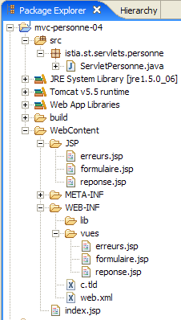
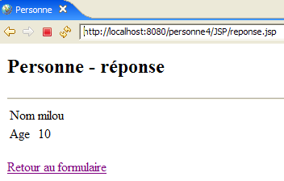

9. Application web MVC [personne] – version 4
Cette versions utilise la bibliothèque de balises JSTL présentée précédemment.
9.1. Le projet Eclipse
Pour créer le projet Eclipse [mvc-personne-04] de l'application web [/personne4], on dupliquera le projet [mvc-personne-03] en suivant la procédure décrite au paragraphe 6.2, page 78.
 |  |
9.2. Configuration de l'application web [personne4]
Le fichier web.xml de l'application /personne4 est le suivant :
<?xml version="1.0" encoding="UTF-8"?>
<web-app id="WebApp_ID" version="2.4"
xmlns="http://java.sun.com/xml/ns/j2ee"
xmlns:xsi="http://www.w3.org/2001/XMLSchema-instance"
xsi:schemaLocation="http://java.sun.com/xml/ns/j2ee http://java.sun.com/xml/ns/j2ee/web-app_2_4.xsd">
<display-name>mvc-personne-04</display-name>
...
Ce fichier est identique à celui de la version précédente hormis la ligne 6 où le nom d'affichage de l'application web a changé en [mvc-personne-04].
La page d'accueil [index.jsp] change :
<%@ page language="java" contentType="text/html; charset=ISO-8859-1"
pageEncoding="ISO-8859-1"%>
<%@ taglib uri="/WEB-INF/c.tld" prefix="c" %>
<c:redirect url="/main"/>
- ligne 5 : la page [index.jsp] redirige le client vers l'url [/main] qui mène au contrôleur [ServletPersonne] de l'application [/personne4]. La balise <c:redirect> appartient à la bibliothèque JSTL / Core. Elle présente la particularité de compléter l'Url de son attribut [url] en y ajoutant :
- le préfixe [/contexte], où [contexte] est le contexte de l'application, ici [personne4].
- le suffixe [?jsessionid=id_session] si le navigateur qui fait la requête n'a pas envoyé de cookie de session. L'identifiant [jsessionid] désigne l'identifiant du jeton de session envoyé par le serveur web à ses clients. Il dépend du serveur web. Ici, c'est celui du serveur Tomcat. [id_session] est le jeton de session lui-même.
Ainsi, la véritable Url de redirection de la ligne 5 de [index.jsp] est l'Url [/personne4/main?jsessionid=XX] où XX est le jeton de session. C'est ce que montre la page ci-dessous obtenue après avoir demandé initialement l'Url [http://localhost:8080/personne4] :

Le lien entre la balise <c:redirect> et le jeton de session est assez subtil. Son étude est ici prématurée mais nous aurons l'occasion d'y revenir.
9.3. Le code des vues
9.3.1. La vue [formulaire]
Cette vue n'a pas changé :
Elle est générée par page JSP [formulaire.jsp] suivante :
<%@ page language="java" contentType="text/html; charset=ISO-8859-1"
pageEncoding="ISO-8859-1"%>
<!DOCTYPE HTML PUBLIC "-//W3C//DTD HTML 4.01 Transitional//EN">
<%@ taglib uri="/WEB-INF/c.tld" prefix="c" %>
<html>
<head>
<title>Personne - formulaire</title>
<script language="javascript">
...
</script>
</head>
<body>
<center>
<h2>Personne - formulaire</h2>
<hr>
<form name="frmPersonne" method="post">
<table>
<tr>
<td>Nom</td>
<td><input name="txtNom" value="${nom}" type="text" size="20"></td>
</tr>
<tr>
<td>Age</td>
<td><input name="txtAge" value="${age}" type="text" size="3"></td>
</tr>
<tr>
</table>
<table>
<tr>
<td><input type="submit" value="Submit"></td>
<td><input type="button" value="[Envoyer]" onclick="envoyer()"></td>
<td><input type="reset" value="Rétablir"></td>
<td><input type="button" value="[Effacer]" onclick="effacer()"></td>
</tr>
</table>
<input type="hidden" name="action" value="validationFormulaire">
</form>
</center>
</body>
</html>
Les nouveautés :
- ligne 4 : déclaration de la bibliothèque de balises JSTL / Core
- lignes 21, 25 : récupération d'attributs [nom, age] dans le modèle de la page. Rappelons que ces attributs seront cherchés successivement dans la requête [request], la session [session] et l'application [application] de la page JSP. Dans notre cas, le contrôleur les mettra dans la session.
- il n'y a plus de code Java en début de page JSP pour récupérer le modèle de la page du fait du fonctionnement précédent.
9.3.2. La vue [reponse]
Cette vue n'a pas changé :
 |  |
La nouvelle page JSP [reponse.jsp] est la suivante :
<%@ page language="java" contentType="text/html; charset=ISO-8859-1"
pageEncoding="ISO-8859-1"%>
<!DOCTYPE HTML PUBLIC "-//W3C//DTD HTML 4.01 Transitional//EN">
<%@ taglib uri="/WEB-INF/c.tld" prefix="c" %>
<html>
<head>
<title>Personne</title>
</head>
<body>
<h2>Personne - réponse</h2>
<hr>
<table>
<tr>
<td>Nom</td>
<td>${nom}</td>
</tr>
<tr>
<td>Age</td>
<td>${age}</td>
</tr>
</table>
<br>
<form name="frmPersonne" method="post">
<input type="hidden" name="action" value="retourFormulaire">
</form>
<a href="javascript:document.frmPersonne.submit();">
${lienRetourFormulaire}
</a>
</body>
</html>
Les nouveautés :
- ligne 4 : déclaration de la bibliothèque de balises JSTL / Core
- lignes 16, 20, 28 : récupération d'attributs [nom, age, lienRetourFormulaire] dans le modèle de la page. Il n'y a plus de code Java en début de page JSP pour récupérer celui-ci.
9.3.3. La vue [erreurs]
Cette vue n'a pas changé :
 |  |
La nouvelle page JSP [erreurs.jsp] est la suivante :
<%@ page language="java" contentType="text/html; charset=ISO-8859-1"
pageEncoding="ISO-8859-1"%>
<!DOCTYPE HTML PUBLIC "-//W3C//DTD HTML 4.01 Transitional//EN">
<%@ taglib uri="/WEB-INF/c.tld" prefix="c" %>
<html>
<head>
<title>Personne</title>
</head>
<body>
<h2>Les erreurs suivantes se sont produites</h2>
<ul>
<c:forEach var="erreur" items="${erreurs}">
<li>${erreur}</li>
</c:forEach>
</ul>
<br>
<form name="frmPersonne" method="post">
<input type="hidden" name="action" value="retourFormulaire">
</form>
<a href="javascript:document.frmPersonne.submit();">
${lienRetourFormulaire}
</a>
</body>
</html>
Les nouveautés :
- ligne 4 : déclaration de la bibliothèque de balises JSTL / Core
- lignes 13-15 : affichage de la liste d'erreurs à l'aide de JSTL
- il n'y a plus de code Java en début de page JSP pour récupérer le modèle de celle-ci.
9.4. Tests des vues
Pour réaliser les tests des vues précédentes, nous dupliquons leurs pages JSP dans le dossier /WebContent/JSP du projet Eclipse :

Puis dans le dossier JSP, les pages sont modifiées de la façon suivante :
[formulaire.jsp] :
...
<%
// -- test : on crée le modèle de la page
session.setAttribute("nom","tintin");
session.setAttribute("age","30");
%>
<html>
<head>
Les lignes 4-5 ont été ajoutées pour créer le modèle dont a besoin la page.
[reponse.jsp] :
...
<%
// -- test : on crée le modèle de la page
request.setAttribute("nom","milou");
request.setAttribute("age","10");
request.setAttribute("lienRetourFormulaire","Retour au formulaire");
%>
<html>
<head>
...
Les lignes 4-6 ont été ajoutées pour créer le modèle dont a besoin la page.
[erreurs.jsp] :
<%
// -- test : on crée le modèle de la page
ArrayList<String> erreurs1=new ArrayList<String>();
erreurs1.add("erreur1");
erreurs1.add("erreur2");
request.setAttribute("erreurs",erreurs1);
request.setAttribute("lienRetourFormulaire","Retour au formulaire");
%>
<html>
<head>
Les lignes 4-8 ont été ajoutées pour créer le modèle dont a besoin la page.
Lançon Tomcat si ce n'est déjà fait puis demandons les url suivantes :
 |  |
 |
Nous obtenons bien les vues attendues.
9.5. Le contrôleur [ServletPersonne]
Le contrôleur [ServletPersonne] de l'application web [/personne3] va traiter les actions suivantes :
n° | demande | origine | traitement |
1 | [GET /personne4/main] | url tapée par l'utilisateur | - envoyer la vue [formulaire] vide |
2 | [POST /personne4/main] avec paramètres [txtNom, txtAge, action=validationFormulaire] postés | clic sur le bouton [Envoyer] de la vue [formulaire] | - vérifier les valeurs des paramètres [txtNom, txtAge] - si elles sont incorrectes, envoyer la vue [erreurs(erreurs)] - si elles sont correctes, envoyer la vue [reponse(nom,age)] |
3 | [POST /personne4/main] avec paramètres [action=retourFormulaire] postés | clic sur le lien [Retour au formulaire] des vues [réponse] et [erreurs]. | - envoyer la vue [formulaire] pré-remplie avec les dernières valeurs saisies |
Le squelette du contrôleur [ServletPersonne] est identique à celui de la version précédente. Nous passons en revue les modifications amenées aux méthodes [doInit, doValidationFormulaire, doRetourFormulaire], les méthodes [init, doGet, doPost] ne changeant pas.
9.5.1. La méthode [doInit]
Cette méthode traite la requête n° 1 [GET /personne4/main]. Son code est le suivant :
Les nouveautés :
- ligne 3 : on affiche la vue [formulaire]. Celle-ci attend dans son modèle des attributs " nom " et " age ". Elle ne va pas les y trouver puisqu'ici le contrôleur ne les y met pas. Dans ce cas, la bibliothèque JSTL va récupérer des pointeurs null pour ces attributs. Cela ne provoque pas d'erreurs et des valeurs vides seront affichées pour les éléments ${nom} et ${age} de la vue [formulaire]. Cela nous convient. Nous évitons ainsi d'avoir à initialiser le modèle de la vue [formulaire].
9.5.2. La méthode [doValidationFormulaire]
Cette méthode traite la requête n° 2 [POST /personne4/main] avec [action, txtNom, txtAge] dans les éléments postés. Son code est le suivant :
Les nouveautés :
- ligne 15 : la méthode [doValidationFormulaire] envoie en réponse la vue [réponse]. Celle-ci a dans son modèle les éléments [nom, age, lienRetourFormulaire]. [lienRetourFormulaire] est mis dans le modèle ligne 14, via la requête. Les éléments [nom,age] sont eux mis dans le modèle lignes 8-10, via la session. Dans la version précédente, on avait placé les éléments [nom, age] également dans la requête lorsqu'on envoyait la vue [réponse] cat cette vue les attendait là. Ici, avec la bibliothèque JSTL, on sait que les différents contextes (request, session, application) vont être explorés pour trouver les éléments du modèle. Ils seront donc trouvés dans la session puisque le contrôleur les y a mis (lignes 8-10).
9.5.3. La méthode [doRetourFormulaire]
Cette méthode traite la requête n° 3 [POST /personne4/main] avec [action=retourFormulaire] dans les éléments postés. Son code est le suivant :
Les nouveautés :
- ligne 4 : on affiche la vue [formulaire]. Celle-ci attend dans son modèle des attributs " nom " et " age ". Elle les trouvera dans la session puisque la méthode [doValidationFormulaire] les y a mis et que cette méthode est forcément exécutée avant la méthode [doRetourFormulaire]. Il n'y a donc pas à initialiser le modèle de [formulaire] avant son affichage ligne 4. Du coup, les méthodes [doInit] et [doRetourFormulaire] sont identiques et on pourrait supprimer l'action [retourFormulaire] pour la remplacer par l'action [init]. La méthode [doRetourFormulaire] disparaîtrait alors.
9.6. Tests
Dans cette nouvelle version, seules les vues changent. Le contrôleur [ServletPersonne] lui ne change pas. L'utilisation de JSTL nous a simplement permis d'exploiter plus simplement dans les pages JSP, le modèle construit par le contrôleur.
Lancer ou relancer Tomcat après y avoir intégré le projet Eclipse [personne-mvc-04]. Demander l'url [http://localhost:8080/personne4].